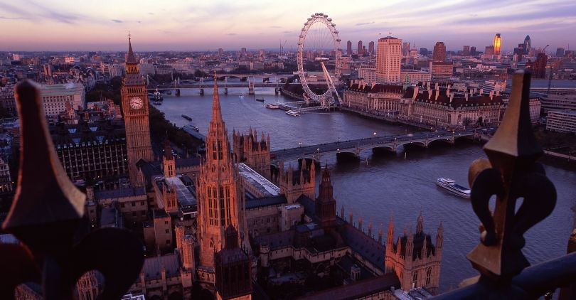
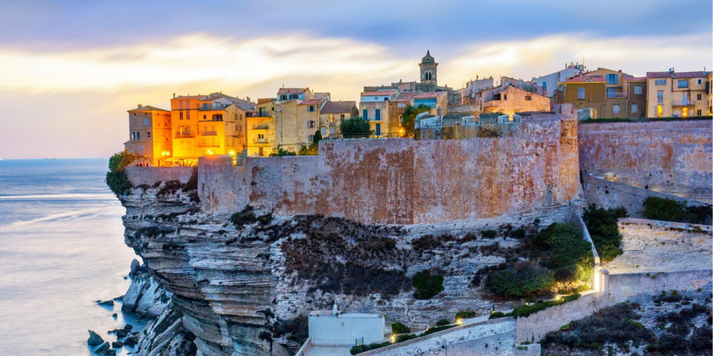

Le Royaume Uni regroupe quatre pays et autant de voyages différents à prévoir. Non, cet état ne se définit pas seulement à l’Angleterre comme on peut souvent en faire l’amalgame mais bien à une multitude de paysages et de cultures à part. Outre-Manche, vous apprécierez l’osmose que l’on retrouve entre les villes britanniques, le climat doux bien que peu ensoleillé, et les plaines verdoyantes des contrées. C’est l’occasion d’aller voir plus loin que la Big Ben de Londres, et enfin visiter l’Écosse, le Pays de Galles, l’Irlande du Nord, et les terres et les autres villes de l’Angleterre. Bien que la capitale soit un bonheur pour chaque voyageur, vous lirez ci-dessous que chacun des pays mérite qu’on s’y attarde bien plus qu’un simple weekend.

Terre de tous les contrastes, le Japon offre un éclectisme à nul autre pareil. Des mégalopoles électriques et high-tech à la quiétude sereine des lieux bouddhistes en passant par une gastronomie des plus inventives : il existe de multiples raisons de vous vous décider à préparer un voyage au Japon.
Doté d’une impressionnante collection de merveilles naturelles, d’une faune abondante, de plages éblouissantes, de villes cosmopolites et des vastes étendues de l’Outback et d’une histoire singulière. Il est facile de comprendre pourquoi ce pays captive tant. Non seulement il offre des activités pour tous les goûts, budgets, et intérêts. Mais il offre également des expériences uniques presque introuvables ailleurs. Il n’y a absolument rien que vous ne puissiez faire si vous décidez de partir en Australie.
Culture, gastronomie, expériences : le Canada possède sans conteste une offre diversifiée pour satisfaire tous les goûts. Quelle que soit votre passion, nous avons quelque chose pour vous. Tout ce que vous avez à faire, c’est de choisir un endroit à visiter et de commencer votre exploration.

La Corse est un magnifique mélange de baies de sable blanc et de criques de galets, considérées parmi les plus propres et les plus belles de France. Toutes offrent une excellente baignade et, pour les plus aventureux, de nombreuses possibilités de sports nautiques comme la voile, la planche à voile et le kayak de mer.